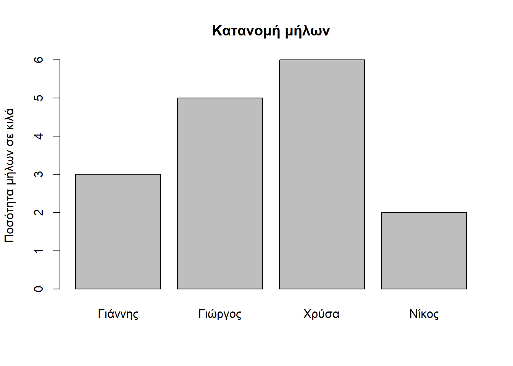
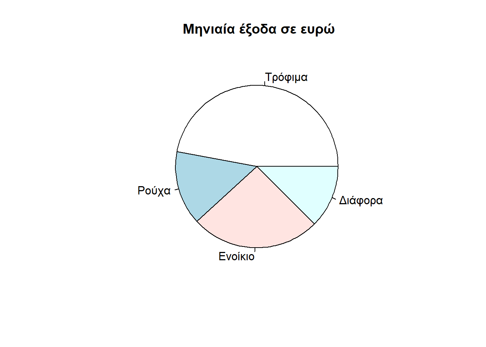
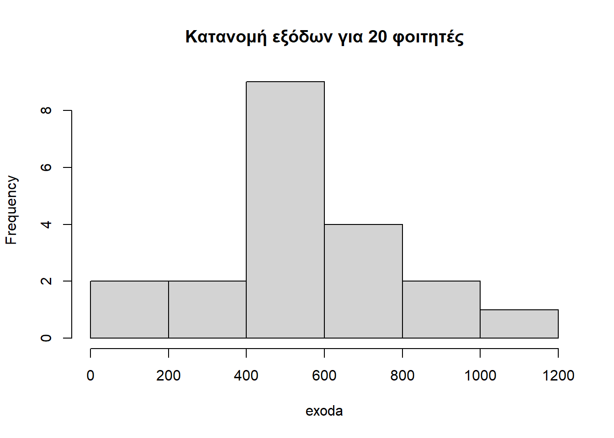
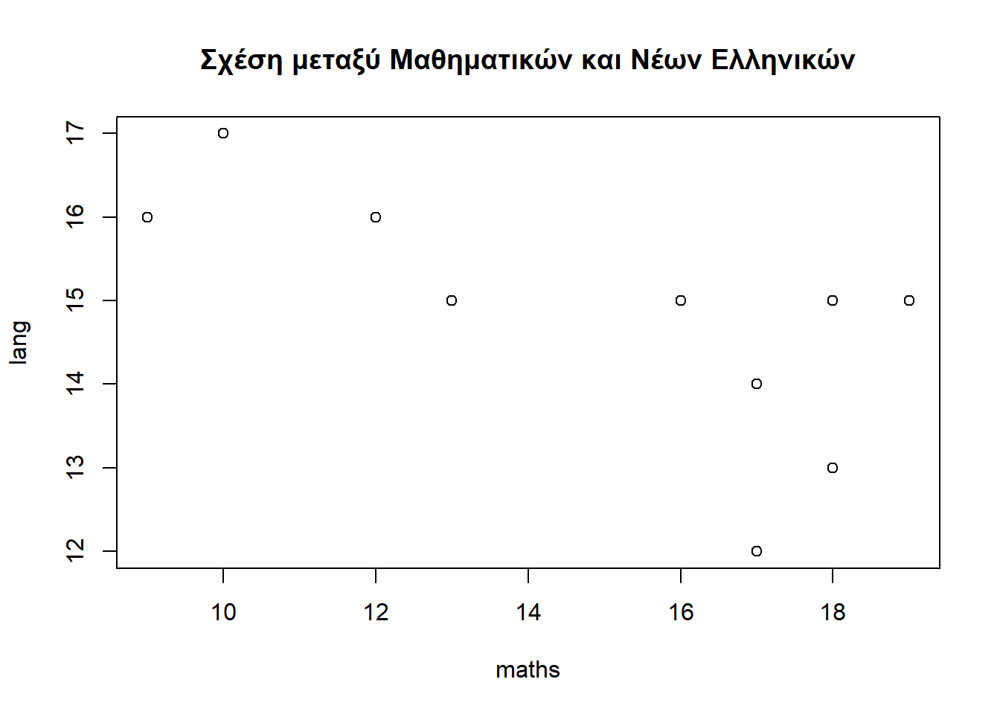

Κεφάλαιο 3 Τα Βασικά Στοιχεία της R
H R είναι μια αντικειμενοστρεφής γλώσσα προγραμματισμού και βασίζεται σε δυο αρχές. Η πρώτη αρχή λέει ότι όλες οι οντότητες που παρουσιάζονται στην R όπως δεδομένα, μεταβλητές, μοντέλα, κ.λπ. είναι αντικείμενα. Η δεύτερη αρχή λέει ότι οτιδήποτε εφαρμόζεται σε ένα αντικείμενο είναι μια πράξη αντικειμένου η οποία μπορεί να υλοποιηθεί μέσω τελεστών ή συναρτήσεων.
3.1 Αντικείμενα
Η βασική μονάδα δεδομένων σε ένα πρόγραμμα είναι η τιμή και αυτή θεωρείται αντικείμενο. Κάθε αντικείμενο ανήκει σε μια κλάση ή τύπος δεδομένων. Στην R έχουμε δύο κατηγορίες κλάσεων αντικειμένων: οι ατομικές και οι σύνθετες κλάσεις δεδομένων. Σε αυτή την ενότητα θα δούμε τις ατομικές κλάσεις αντικειμένων και σε επόμενη ενότητα θα δούμε τις σύνθετες κλάσεις αντικειμένων.
3.1.1 Ατομικές Κλάσεις Αντικειμένων
Οι ατομικές κλάσεις δεδομένων (ή αλλιώς σύντομα θα τα λέμε βασικά αντικείμενα) είναι τα αντικείμενα εκείνα που φιλοξενούν μια μόνο τιμή. Στην R υπάρχουν τέσσερις βασικές κλάσεις αντικειμένων: αριθμητικές τιμές, αλφαριθμητικά ή χαρακτήρες κειμένου, λογικές τιμές και παράγοντες.
Οι αριθμητικές τιμές στην R μπορεί να είναι ακέραιοι αριθμοί ή πραγματικοί αριθμοί. Οι ακέραιοι αριθμοί μπορεί να είναι οι θετικοί ή αρνητικοί αριθμοί χωρίς την υποδιαστολή ενώ οι πραγματικοί αριθμοί είναι οι θετικοί ή αρνητικοί αριθμοί που έχουν μια υποδιαστολή. Για παράδειγμα, αν πληκτρολογήσουμε τις παρακάτω αριθμητικές τιμές στην κονσόλα
4## [1] 40## [1] 0-5## [1] -51.1## [1] 1.1-2.344## [1] -2.344τότε επιστρέφονται οι ίδιες οι τιμές ως αντικείμενα αριθμών.
Οι χαρακτήρες κειμένου στην R είναι μια σειρά αλφαριθμητικών χαρακτήρων που περικλείεται μέσα σε μονά ή διπλά εισαγωγικά. Για παράδειγμα, αν πληκτρολογήσουμε τις παρακάτω τιμές στην κονσόλα
'γλώσσα R'## [1] "γλώσσα R""computer 2520"## [1] "computer 2520"'2021'## [1] "2021"τότε οι επιστρέφονται οι ίδιες οι τιμές ως αντικείμενα χαρακτήρων κειμένου.
Οι λογικές τιμές στην R μπορεί να είναι TRUE ή FALSE που σημαίνουν αληθής ή ψευδής αντίστοιχα. Για παράδειγμα, αν πληκτρολογήσουμε τις παρακάτω τιμές στην κονσόλα
TRUE## [1] TRUET## [1] TRUEFALSE## [1] FALSEF## [1] FALSEτότε οι επιστρέφονται οι ίδιες οι τιμές ως αντικείμενα λογικών. Από τα παραπάνω προκύπτει ότι η τιμή T μπορεί να χρησιμοποιηθεί και θεωρείται ισοδύναμη με την τιμή TRUE. Με παρόμοιο τρόπο ισχύει για την τιμή F.
3.2 Τελεστές
Kάθε ένα από τα βασικά αντικείμενα που είδαμε προηγουμένως, μπορεί να εφαρμοστεί το δικό της σύνολο επιτρεπτών πράξεων. Οι πράξεις μεταξύ των αντικειμένων γίνονται με την χρήση των τελεστών και τα αποτελέσματα των πράξεων είναι νέα αντικείμενα. Τα αντικείμενα αριθμοί έχουν νόημα οι γνωστές αριθμητικές πράξεις που γίνονται με την βοήθεια των ακόλουθων αριθμητικών τελεστών.
| Τελεστής | Περιγραφή |
|---|---|
| + | πρόσθεση |
| - | αφαίρεση |
| * | πολλαπλασιασμός |
| / | διαίρεση |
| ^ ή ** | ύψωση σε δύναμη |
| %% | ακέραιο υπόλοιπο |
| %/% | ακέραια διαίρεση |
Παρακάτω παρουσιάζονται ορισμένα παραδείγματα αριθμητικών πράξεων:
1 + 1## [1] 23.01 - 2.55## [1] 0.463 * 4.1## [1] 12.381 / 9## [1] 92^3## [1] 8100 %% 5## [1] 0100 %/% 5## [1] 20Eπίσης, τα αντικείμενα αριθμοί έχουν νόημα οι συγκρίσεις που γίνονται με την βοήθεια των παρακάτω συγκριτικών τελεστών.
| Τελεστής | Περιγραφή |
|---|---|
| < | μικρότερο |
| <= | μικρότερο ή ίσο |
| > | μεγαλύτερο |
| >= | μεγαλύτερο ή ίσο |
| == | ίσο ή ισότητα |
| != | διάφορο |
Όταν συγκρίνουμε δύο ποσότητες, το αποτέλεσμα που επιστρέφει είναι ένα αντικείμενο λογικού τύπου δηλαδή TRUE ή FALSE. Παρακάτω παρουσιάζονται ορισμένα παραδείγματα συγκρίσεων:
2 > 5## [1] FALSE10.5 < 20.99## [1] TRUE5 == 5## [1] TRUE-2 != 2## [1] TRUEΠολλές φορές, χρησιμοποιούμε συνδυάσουμε εκφράσεις για να πάρουμε αποφάσεις. Αυτές οι εκφράσεις συνδυάζονται με την βοήθεια των παρακάτω λογικών τελεστών.
| Τελεστής | Περιγραφή |
|---|---|
| & | λογικό ΚΑΙ |
| | | λογικό Η |
| ! | άρνηση |
Το λογικό ΚΑΙ δίνει αληθής τιμή μόνο όταν και οι δύο εκφράσεις είναι αληθείς. Το λογικό Η δίνει αληθής τιμή όταν μια από τις δύο εκφράσεις είναι αληθείς. Η άρνηση μιας έκφρασης δίνει αληθής τιμή αν η έκφραση είναι ψευδής. Παρακάτω παρουσιάζονται ορισμένα παραδείγματα λογικών τελεστών:
2 > 3 & 5 > 2## [1] FALSE2 > 3 | 5 > 2## [1] TRUE!(2 > 3)## [1] TRUE3.3 Συναρτήσεις
H base R διαθέτει πολλές ενσωματωμένες συναρτήσεις που μας βοηθούν να κάνουμε διάφορες εργασίες επί των αντικειμένων εύκολα. Oι συναρτήσεις στην R είναι επίσης αντικείμενα και δουλεύουν με το ίδιο τρόπο όπως μάθαμε στο σχολείο. Με άλλα λόγια, κάθε συνάρτηση έχει ένα όνομα που λαμβάνει ένα αντικείμενο, υπολογίζει κάτι και επιστρέφει ένα άλλο αντικείμενο.
Για να χρησιμοποιήσουμε μια συνάρτηση την καλούμε με το όνομα της ακολουθούμενη με τις παρενθέσεις της με την παρακάτω μορφή:
όνομα_συνάρτησης(όρισμα1, όρισμα2, ...)και λέγεται κλήση της συνάρτησης. Μέσα τις παρενθέσεις της συνάρτησης περνάμε τα αντικείμενα εισόδου που λέγονται ορίσματα. Για παράδειγμα, η παρακάτω συνάρτηση
sqrt(64)## [1] 8επιστρέφει την τετραγωνική ρίζα της τιμής 64 που είναι 8. Η παρακάτω συνάρτηση
log(10)## [1] 2.302585επιστρέφει το λογάριθμος της τιμής 10 που είναι 2.30.
Οι παραπάνω συναρτήσεις που είδαμε είναι αριθμητικές συναρτήσεις επειδή λαμβάνουν ως είσοδο αριθμητικά αντικείμενα. Επίσης, η R περιέχει ενσωματωμένες συναρτήσεων χαρακτήρων κειμένου που λαμβάνουν ως είσοδο αντικείμενα αλφαριθμητικά. Για παράδειγμα, η συνάρτηση
paste("Good", "Morning")## [1] "Good Morning"επιστρέφει ένα αντικείμενο αλφαριθμητικό που έχει συνενώσει τα δυο αλφαριθμητικά Good και Morning διαχωρισμένα με ένα κενό μεταξύ τους. Επίσης, η συνάρτηση
toupper('Good')## [1] "GOOD"επιστρέφει ένα αντικείμενο αλφαριθμητικό σε κεφαλαία γράμματα.
3.4 Μεταβλητές
Μέχρι τώρα έχουμε δει πράξεις που τα αποτελέσματα ή τα αντικείμενα τους εμφανίζονται μόνο στην κονσόλα. Πολλές φορές είναι χρήσιμο να αποθηκεύουμε τα αντικείμενα αυτά στην μνήμη. Αυτό μπορεί να γίνει με την βοήθεια της μεταβλητής. Η μεταβλητή είναι ένα άλλο αντικείμενο για την αποθήκευση τιμών ή αντικειμένων ώστε να χρησιμοποιηθεί για μελλοντική χρήση. Η μεταβλητή δημιουργείται με τη χρήση του τελεστή ανάθεσης <- ή του τελεστή = με την εξής μορφή:
όνομα_μεταβλητής <- αντικείμενοόπου το όνομα της μεταβλητής μπορεί να είναι συνδυασμός γραμμάτων, αριθμών ή κάτω παύλα (_). Για παράδειγμα, αν θέλουμε να αποθηκεύσουμε την ποσότητα προϊόντος (π.χ. 5 τεμάχια) που αγοράζει κάποιος πελάτης σε κάποια μεταβλητή, τότε μπορούμε να εισάγουμε στην κονσόλα την ακόλουθη ανάθεση:
x <- 5H παραπάνω ανάθεση έχει ως αποτέλεσμα να μην εμφανίζει κάτι στην κονσόλα απλά έχει δημιουργηθεί ένα αντικείμενο με όνομα x που αποθηκεύει την τιμή 5. Επίσης, αν θέλουμε να αποθηκεύσουμε το όνομα του προϊόντος που αγόραζε ο πελάτης (π.χ. 'books') καθώς και αν το φύλο του πελάτη είναι άνδρας (π.χ. υποθέτουμε ότι ο πελάτης μας είναι άνδρας και βάζουμε την τιμή TRUE ), τότε έχουμε τις ακόλουθες αναθέσεις τιμών:
y <- 'books'
z <- TRUETα παραπάνω παραδείγματα αναθέσεων που είδαμε είναι έγκυρες αλλά τα ονόματα των μεταβλητών που επιλέξαμε δεν είναι καλά και περιγραφικά. Έτσι, ένα όνομα μεταβλητής είναι περιγραφικό όταν το όνομα της αποτελείται από λέξη ή συνδυασμός λέξεων που διαχωρίζονται μεταξύ τους με κάτω παύλα (_) και να υπονοεί το αντικείμενο που αποθηκεύει. Για παράδειγμα, τα ονόματα μεταβλητών των προηγούμενων αναθέσεων που είδαμε θα μπορούσαν να είναι τα εξής:
quantity <- 5
name_product <- 'books'
gender_male <- TRUEΓια να δούμε τα περιεχόμενα μιας μεταβλητής καλούμε το όνομα της μεταβλητής (ή αλλιώς του αντικειμένου). Για παράδειγμα, αν πληκτρολογήσουμε το παρακάτω όνομα στην κονσόλα:
quantity## [1] 5τότε μας επιστρέφει και εμφανίζει στην κονσόλα την τιμή 5. Αν όμως πληκτρολογήσουμε κατά λάθος το παρακάτω όνομα με το πρώτο γράμμα να είναι κεφαλαίο, τότε έχουμε:
Quantity## Error in eval(expr, envir, enclos): object 'Quantity' not foundΣε αυτή την περίπτωση λαμβάνουμε ένα μήνυμα λάθους που λέει ότι δεν αναγνωρίζει ή δεν υπάρχει αντικείμενο με όνομα Quantity. Εδώ παρατηρούμε ότι η R είναι ευαίσθητη στην διάκριση πεζών – κεφαλαίων γραμμάτων. Συνεπώς τα ονόματα quantity και Quantity είναι διαφορετικά.
Tέλος, η R μας επιτρέπει να κάνουμε υπολογισμούς με τα αντικείμενα μεταβλητών μέσω τελεστών ή/και συναρτήσεων. Με άλλα λόγια, μπορούμε να χρησιμοποιήσουμε μια μεταβλητή σε διάφορους υπολογισμούς. Για παράδειγμα, θέλουμε να υπολογίσουμε το κόστος αγοράς για τα πέντε προϊόντα που αγόρασε ο πελάτης αν η τιμή του τεμαχίου είναι 15.5 €. Σε αυτή την περίπτωση όπως έχουμε δει προηγουμένως, η ποσότητα των προϊόντων είναι αποθηκευμένη στην μεταβλητή quantity και δεν έχουμε παρά να πληκτρολογήσουμε την παρακάτω έκφραση:
quantity * 15.5## [1] 77.5Πριν τον υπολογισμό της παραπάνω έκφρασης, η μεταβλητή quantity αξιολογείται και παίρνει την τιμή που είναι αποθηκευμένη τη τρέχουσα στιγμή, δηλαδή την τιμή 5. Στην συνέχεια, εκτελείται η πράξη του πολλαπλασιασμού και παρατηρούμε ότι το κόστος αγοράς για τα πέντε προϊόντα είναι 77.5 €. Εναλλακτικά, θα μπορούσαμε να αποθηκεύσουμε την τιμή 15.5 € σε μια μεταβλητή price, δηλαδή,
price <- 15.5και έπειτα να υπολογίσαμε το συνολικό κόστος αγοράς με την παρακάτω έκφραση:
quantity * price## [1] 77.5Eπίσης, θέλουμε να υπολογίσουμε το συνολικό κόστος αγοράς των προϊόντων μετά από μια έκπτωση 12% και το αποτέλεσμα θέλουμε να αποθηκευτεί σε μια νέα μεταβλητή με όνομα cost. Για να γίνει αυτό, θα πρέπει πρώτα να υπολογίσουμε το αρχικό κόστος αγοράς των προϊόντων και να το αναθέσουμε σε μια μεταβλητή original _cost, δηλαδή,
original_cost <- quantity * priceΣτην συνέχεια, να υπολογίσουμε το ποσό της έκπτωσης επί του αρχικού κόστους αγοράς και να το αφαιρέσουμε από το αρχικό κόστος αγοράς, δηλαδή,
cost <- original_cost - (original_cost * 0.12)
cost## [1] 68.2Το συνολικό κόστος αγοράς μετά από έκπτωση θα μπορούσε να υπολογιστεί ισοδύναμα ως μια έκφραση χωρίς την ενδιάμεση μεταβλητή original_cost που χρησιμοποιήσαμε προηγουμένως, δηλαδή θα μπορούσε να γραφεί ως εξής:
cost <- (quantity * price) - (quantity * price * 0.12)
cost## [1] 68.2Σε αυτή την περίπτωση η έκφραση που δημιουργείται γίνεται πολύπλοκη και χρειάζεται προσοχή.
3.5 Σύνθετες Κλάσεις Αντικειμένων
Μέχρι τώρα είδαμε αντικείμενα που φιλοξενούν μόνο μια τιμή δεδομένων. H γλώσσα R υποστηρίζει σύνθετες κλάσεις αντικειμένων όπως τα διανύσματα, οι πίνακες, οι λίστες και τα πλαίσια δεδομένων τα οποία φιλοξενούν περισσότερες από μια τιμές δεδομένων.
3.5.1 Διανύσματα
Ένα διάνυσμα είναι μια συλλογή τιμών ίδιου τύπου. Οι τιμές αυτές μπορεί να είναι αριθμητικές, αλφαριθμητικές ή λογικές. Ένα διάνυσμα στην R δημιουργείται με την συνάρτηση c(). Για παράδειγμα, έχουμε τέσσερα ονόματα πελατών που αγόραζαν ένα προϊόν και θέλουμε να τα αποθηκεύουμε σε ένα διάνυσμα χαρακτήρων κειμένου με όνομα names_persons ως εξής:
names_persons <- c("Peter", "George", "Panos", "Helen")
names_persons## [1] "Peter" "George" "Panos" "Helen"Επίσης, για τους παραπάνω πελάτες θέλουμε να αποθηκεύσουμε τις αντίστοιχες ποσότητες προϊόντος που αγόραζαν σε ένα αριθμητικό διάνυσμα με όνομα quantities. Αυτό μπορεί να γίνει ως εξής:
quantities <- c(10, 5, 1, 4)
quantities## [1] 10 5 1 4Επιπλέον, για τους παραπάνω πελάτες θέλουμε να αποθηκεύσουμε τις αντίστοιχες λογικές τιμές για το αν οι αντίστοιχοι πελάτες είναι άνδρες σε ένα λογικό διάνυσμα με όνομα gender_male. Αυτό γίνεται ως εξής:
gender_male <- c(T, T, T, F)
gender_male## [1] TRUE TRUE TRUE FALSEΜια από τις πράξεις που μπορούμε να κάνουμε στα διανύσματα είναι η προσπέλαση των στοιχείων τους. Έτσι, μπορούμε να προσπελάζουμε τα στοιχεία ενός διανύσματος με τις θέσεις τους που περικλείονται μέσα σε αγκύλες. Εδώ σημειώνουμε ότι το πρώτο στοιχείο του διανύσματος ξεκινάει με την θέση 1. Για παράδειγμα, για να προσπελάσουμε το όνομα και το φύλο του δεύτερου πελάτη, γράφουμε στην κονσόλα το όνομα του διανύσματος και μέσα σε αγκύλες την θέση 2, δηλαδή ως εξής:
names_persons[2]## [1] "George"gender_male[2]## [1] TRUEΕπίσης, μπορούμε να εκτελέσουμε μια σειρά άμεσων υπολογισμών στα διανύσματα μέσω τελεστών ή και συναρτήσεων. Για παράδειγμα, θέλουμε να υπολογίσουμε το κόστος αγοράς των προϊόντων για κάθε ένα από τους τέσσερις πελάτες αν η τιμή του προϊόντος είναι 5 €. Αυτό μπορεί να υπολογιστεί, γράφοντας στην κονσόλα την παρακάτω έκφραση:
quantities * 5## [1] 50 25 5 20H παραπάνω έκφραση όπως παρατηρούμε πολλαπλασιάζει την τιμη 5 με το κάθε στοιχείο του διανύσματος quantities. To αποτέλεσμα που προκύπτει είναι ένα αντικείμενο αριθμητικού διανύσματος που περιέχει τα κόστη αγοράς για τους τέσσερις πελάτες.
Eπίσης, αν θέλουμε τα ονόματα των τεσσάρων πελατών να είναι όλα κεφαλαία τότε μπορούμε να χρησιμοποιήσουμε την συνάρτηση toupper() ως εξής:
toupper(names_persons)## [1] "PETER" "GEORGE" "PANOS" "HELEN"Μερικές φορές θέλουμε να συνοψίζουμε τις τιμές ενός διανύσματος σε μια μόνο τιμή. Για το σκοπό αυτό, η R διαθέτει στατιστικές συναρτήσεις όπως φαίνονται στον παρακάτω πίνακα.
| Συνάρτηση | Περιγραφή |
|---|---|
| sum() | άθροισμα τιμών |
| length() | πλήθος τιμών |
| min() | μικρότερη τιμή |
| max() | μεγαλύτερη τιμή |
| mean() | μέση τιμή |
| median() | διάμεση τιμή |
| sd() | τυπική απόκλιση |
Για παράδειγμα για να βρούμε την μέση και διάμεση ποσότητα που αγόραζαν οι τέσσερις πελάτες, εισάγουμε στην κονσόλα τις παρακάτω συναρτήσεις:
mean(quantities)## [1] 5median(quantities)## [1] 4.5Από τα παραπάνω αποτελέσματα διαπιστώνουμε ότι η ποσότητα που αγόραζαν κατά μέσο όροι οι πελάτες είναι περίπου 5 τεμάχια.
Tέλος, αν θέλαμε να υπολογίσουμε το ποσοστό των πελατών που είναι άνδρες, τότε χρησιμοποιούμε την συνάρτηση mean() ως εξής:
mean(gender_male)## [1] 0.75Διαπιστώνουμε ότι το 75% των πελατών που αγόραζαν το προϊόν είναι άνδρες.
3.5.2 Πίνακες
Ένας πίνακας είναι μια συλλογή διανυσμάτων οργανωμένη σε γραμμές και στήλες. Οι τιμές του πίνακα πρέπει να είναι ιδίου τύπου δεδομένων. Ο πίνακας στην R δημιουργείται με την συνάρτηση matrix(). Για παράδειγμα, θέλουμε να δημιουργήσουμε ένα πίνακα με 4 γραμμές και 4 στήλες με ακέραιες τιμές από το 1 έως 16. Αυτό γίνεται ως εξής:
m <- matrix(1:16, 4, 4)
m## [,1] [,2] [,3] [,4]
## [1,] 1 5 9 13
## [2,] 2 6 10 14
## [3,] 3 7 11 15
## [4,] 4 8 12 16Aπό την παραπάνω έξοδο παρατηρούμε ότι οι τιμές του πίνακα συμπληρώνονται κατά στήλες.
Τα στοιχεία του πίνακα μπορούμε να τα προσπελάσουμε με την βοήθεια δύο δεικτών που περικλείονται μέσα σε αγκύλες. Ο πρώτος δείκτης δείχνει τη γραμμή του πίνακα και ο δεύτερος δείχνει τη στήλη του πίνακα. Για παράδειγμα, για να προσπελάσουμε το στοιχείο της 2ης γραμμής και 3ης στήλης του πίνακα m, εισάγουμε στην κονσόλα την παρακάτω έκφραση:
m[2,3]## [1] 10Επίσης, μπορούμε να εκτελέσουμε υπολογισμούς πάνω τους πίνακες όπως στα διανύσματα. Για παράδειγμα, η παρακάτω πράξη
m + 10## [,1] [,2] [,3] [,4]
## [1,] 11 15 19 23
## [2,] 12 16 20 24
## [3,] 13 17 21 25
## [4,] 14 18 22 26προσθέτει όλα τα στοιχεία του πίνακα m με την τιμή 10. Επίσης, η ακόλουθη πράξη
m + m## [,1] [,2] [,3] [,4]
## [1,] 2 10 18 26
## [2,] 4 12 20 28
## [3,] 6 14 22 30
## [4,] 8 16 24 32υπολογίζει το άθροισμα δύο πινάκων. Μπορούν να γίνουν παρόμοιες αριθμητικές πράξεις πινάκων όπως αφαίρεση, πολλαπλασιασμός, κ.λπ. Τέλος, οι συναρτήσεις rbind() και cbind() συνδυάζουν δύο πίνακες κατά γραμμές και στήλες αντίστοιχα. Για παράδειγμα, η παρακάτω συνάρτηση
rbind(m, m)## [,1] [,2] [,3] [,4]
## [1,] 1 5 9 13
## [2,] 2 6 10 14
## [3,] 3 7 11 15
## [4,] 4 8 12 16
## [5,] 1 5 9 13
## [6,] 2 6 10 14
## [7,] 3 7 11 15
## [8,] 4 8 12 16συνδυάζει δύο πίνακες m κατά γραμμές.
3.5.3 Πλαίσια Δεδομένων
Ένα πλαίσιο δεδομένων είναι τυπικά μια ορθογώνια διάταξη δεδομένων. Το πλαίσιο δεδομένων αποτελείται από στήλες, όπου κάθε στήλη του πλαισίου είναι ένα διάνυσμα ενός τύπου δεδομένων. Σε αντίθεση με τους πίνακες, οι στήλες μεταξύ τους μπορεί να έχουν διαφορετικό τύπο δεδομένων. Όμως, στα πλαίσια της ανάλυσης δεδομένων, κάθε γραμμή του πλαισίου αναπαριστά μια παρατήρηση και κάθε στήλη αναπαριστά μια μεταβλητή. Ένα πλαίσιο δεδομένων στην R δημιουργείται με την συνάρτηση
data.frame(). Για παράδειγμα, παρακάτω ορίζουμε ένα πλαίσιο δεδομένων με όνομα data_set με βάση τα παραδείγματα διανυσμάτων που είδαμε προηγουμένως (δηλαδή, τα ονόματα των πελατών, τις ποσότητες που αγόραζαν οι πελάτες και το φύλο του πελάτη):
data_set <- data.frame(names_persons, quantities, gender_male)
data_set## names_persons quantities gender_male
## 1 Peter 10 TRUE
## 2 George 5 TRUE
## 3 Panos 1 TRUE
## 4 Helen 4 FALSEΓια να προσπελάσουμε μια στήλη ενός πλαισίου δεδομένων χρησιμοποιούμε το τελεστή $ με την εξής μορφή:
όνομα_πλαίσιου$μεταβλητήΓια παράδειγμα, για να δούμε μόνο τις τιμές της μεταβλητής quantities του πλαισίου δεδομένων data_set, εισάγουμε την παρακάτω έκφραση στην κονσόλα:
data_set$quantities## [1] 10 5 1 4Ορισμένες συναρτήσεις μπορούν να εφαρμοστούν στο αντικείμενο πλαίσιο δεδομένων, όπως οι συναρτήσεις str(), summary(), κ.λπ. Η συνάρτηση str() δίνει πληροφορίες για την δομή ενός πλαίσιου δεδομένων όπως φαίνονται παρακάτω:
str(data_set)## 'data.frame': 4 obs. of 3 variables:
## $ names_persons: chr "Peter" "George" "Panos" "Helen"
## $ quantities : num 10 5 1 4
## $ gender_male : logi TRUE TRUE TRUE FALSEΤέλος, η συνάρτηση summary() παρέχει συνοπτικές στατιστικές πληροφορίες για όλες τις μεταβλητές του πλαισίου δεδομένων όπως φαίνονται παρακάτω:
summary(data_set)## names_persons quantities gender_male
## Length:4 Min. : 1.00 Mode :logical
## Class :character 1st Qu.: 3.25 FALSE:1
## Mode :character Median : 4.50 TRUE :3
## Mean : 5.00
## 3rd Qu.: 6.25
## Max. :10.003.6 Συναρτήσεις Γραφικών
Τα γραφικά ή τα γραφήματα όπως είναι γνωστό έχουν σαν στόχο να εξετάσουμε τη κατανομή και τα χαρακτηριστικά των δεδομένων με ένα εύληπτο και πληροφοριακό τρόπο. Συνήθως, η δημιουργία γραφημάτων εξαρτάται από το τύπο των δεδομένων που θέλουμε να παρουσιάσουμε. Για παράδειγμα, για τα ποιοτικά δεδομένα χρησιμοποιούμε τα διαγράμματα ραβδόγραμμα και κυκλικό διάγραμμα για να δείξουμε την κατανομή ή την σύνθεση των δεδομένων. Από την άλλη πλευρά, για τα ποσοτικά δεδομένα χρησιμοποιούμε τo διάγραμμα ιστόγραμμα για να δείξουμε τη κατανομή μιας μεταβλητής και το διάγραμμα διασποράς για να διευρευνήσουμε τη σχέση μεταξύ δύο μεταβλητών.
Στη συνέχεια, θα παρουσιάσουμε συναρτήσεις δημιουργίας των γραφημάτων που αναφέραμε προηγουμένως.
3.6.1 Ραβδόγραμμα
To ραβδόγραμμα χρησιμοποιείται για την παρουσίαση ποιοτικών δεδομένων και κυρίως να δείξουμε την επικρατούσα κατηγορία μεταξύ διαφόρων κατηγοριών. Για παράδειγμα, έχουμε μια παρέα τεσσάρων φίλων που το τελευταίο Σάββατο αγόραζαν μήλα από το παζάρι. Συγκεκριμένα, οι ποσότητες μήλων σε κιλά που αγόρασαν οι φίλοι είναι οι εξής:
Γιάννης 3 κιλά μήλα
Γιώργος 5 κιλά μήλα
Χρύσα 6 κιλά μήλα
Νίκος 2 κιλά μήλα
Από το παράδειγμα αυτό θέλουμε να δούμε ποιο άτομo αγόραζε μήλα με τα περισσότερα κιλά. Αυτό μπορεί εύκολα να διαπιστωθεί με ένα ραβδόγραμμα.
Για να δημιουργήσουμε ραβδόγραμμα στην R θα πρέπει πρώτα να αποθηκεύσουμε ή να εισάγουμε τα παραπάνω δεδομένα στην R (ή αλλιώς στην μνήμη του Η/Υ) και έπειτα να κατασκευάσουμε το διάγραμμα. Αυτό μπορεί να γίνει εύκολα με την βοήθεια του αρχείου R Script, ώστε το αρχείο να καταγράψουμε τις εντολές R για μεταγενέστερη χρήση. Επομένως, ακολουθούμε τα εξής:
Για να εισάγουμε κώδικα R, επιλέγουμε File, New File και R Script. Στην συνέχεια μας εμφανίζει ένα νέο αρχείο και μέσα σε αυτό θα εισάγουμε τις εντολές μας για τη δημιουργία διαγράμματος.
Το δεύτερο βήμα είναι να αποθηκεύσουμε προσωρινά τα δεδομένα μας σε δύο μεταβλητές. Η μια μεταβλητή να αποθηκεύει τα ονόματα των φίλων και η δεύτερη μεταβλητή να αποθηκεύει τις ποσότητες των μήλων. Στο παράδειγμα μας, θα δημιουργήσουμε μια μεταβλητή με όνομα
amountμε περιεχόμενο ένα διάνυσμα που θα περιέχει τις τέσσερις ποσότητες. Επίσης, θα δημιουργήσουμε μια δεύτερη μεταβλητή με όνομαonomataμε περιεχόμενο ένα διάνυσμα που θα περιέχει τα ονόματα των φίλων.
Έτσι γράφουμε το παρακάτω κώδικα R:
# διάνυσμα που αποθηκεύει τα κιλά
amount = c(3, 5, 6, 2)
# διάνυσμα που αποθηκεύει τα ονόματα
onomata = c("Γιάννης", "Γιώργος", "Χρύσα", "Νίκος") Σημείωση: Στο παραπάνω κώδικα έχουμε χρησιμοποιήσει το σύμβολο της δίεσης (#) και σημαίνει γραμμή σχολίων. Τα σχόλια μας επιτρέπει να γράφουμε επεξηγήσεις για κάθε γραμμή κώδικα και αυτά αγνοούται από την R.
- Το τελευταίο βήμα είναι να δημιουργήσουμε το ραβδόγραμμα με τα παραπάνω δεδομένα και αυτό γίνεται με τη χρήση της συνάρτησης barplot() όπως φαίνεται παρακάτω:
# δημιουργεί ραβδόγραμμα
barplot(amount, names.arg = onomata, ylab = "Ποσότητα μήλων σε κιλά", main = "Κατανομή μήλων")Μέσα στις παρενθέσεις της συνάρτησης barplot() βάζουμε τα ορίσματα που διαχωρίζονται μεταξύ τους με κόμμα. Το πρώτο όρισμα βάζουμε τη μεταβλητή amount που περιέχει τις αριθμητικές τιμές. To δεύτερο όρισμα names.arg βάζουμε τη μεταβλητή onomata για να εμφανιστούν οι λεζάντες στο οριζόντιο άξονα του ραβδογράμματος. Το τρίτο όρισμα ylab βάζουμε μια λεζάντα - κειμένου για το κατακόρυφο άξονα του ραβδογράμματος. Τέλος, το όρισμα main τοποθετούμε το τίτλο του διαγράμματος.
Συνεπώς, ο πλήρες κώδικας R για την κατασκευή ραβδογράμματος φαίνεται παρακάτω και αμέσως μετά παρουσιάζεται το ραβδόγραμμα από την εκτέλεση του κώδικα:
# διάνυσμα που αποθηκεύει τα κιλά
amount = c(3, 5, 6, 2)
# διάνυσμα που αποθηκεύει τα ονόματα
onomata = c("Γιάννης", "Γιώργος", "Χρύσα", "Νίκος")
# δημιουργεί ραβδόγραμμα
barplot(amount, names.arg = onomata, ylab = "Ποσότητα μήλων σε κιλά", main = "Κατανομή μήλων") 
Από το ραβδόγραμμα παρατηρούμε εύκολα ότι η Χρύσα της παρέας αγόραζε μήλα με τα περισσότερα κιλά και μετά ακολουθούν ο Γιώργος, ο Γιάννης και τελευταίος ο Νίκος.
3.6.2 Κυκλικό διάγραμμα ή Πίτα
To κυκλικό διάγραμμα χρησιμοποιείται κυρίως για ποιοτικά δεδομένα και να παρουσιάσουμε τη σύνθεση των δεδομένων. Για παράδειγμα, μια οικογένεια κάνει τα παρακάτω μηνιαία έξοδα:
Τρόφιμα 640 ευρώ
Ρούχα 200 ευρώ
Ενοίκιο 350 ευρώ
Διάφορα 170 Ευρώ
Από αυτό το παράδειγμα θέλουμε να δείξουμε τη σύνθεση των μηνιαίων εξόδων της οικογένειας και αυτό γίνεται εύκολα με το κυκλικό διάγραμμα.
Για να δημιουργήσουμε κυκλικό διάγραμμα στην R ακολοθούμε παρόμοια λογική όπως κάναμε στο ραβδόγραμμα. Με άλλα λόγια, θα πρέπει πρώτα να αποθηκεύσουμε ή να εισάγουμε τα παραπάνω δεδομένα στην R και έπειτα να κατασκευάσουμε το διάγραμμα. Αυτό μπορεί να γίνει εύκολα με την βοήθεια του αρχείου R Script για την εισαγωγή κώδικα R. Επομένως, ακολουθούμε τα εξής:
Πρώτα εισάγουμε κώδικα R, επιλέγοντας File, New File και R Script. Στην συνέχεια μας εμφανίζει ένα νέο αρχείο και μέσα σε αυτό θα εισάγουμε τις εντολές μας για τη δημιουργία διαγράμματος.
Το δεύτερο βήμα είναι να αποθηκεύσουμε προσωρινά τα δεδομένα μας σε δύο μεταβλητές. Η μια μεταβλητή να αποθηκεύει τα είδη των δαπανών/εξόδων και η δεύτερη μεταβλητή να αποθηκεύει τα ποσά των δαπανών. Συγκεκριμένα, θα δημιουργήσουμε μια μεταβλητή με όνομα
eidhμε περιεχόμενο ένα διάνυσμα που θα περιέχει τα είδη των δαπανών. Επίσης, θα δημιουργήσουμε μια δεύτερη μεταβλητή με όνομαposaμε περιεχόμενο ένα διάνυσμα που θα περιέχει τα αντίστοιχα ποσά των δαπανών.
Έτσι γράφουμε το παρακάτω κώδικα R:
# διάνυσμα που αποθηκεύει τα είδη των δαπανών
eidh = c("Τρόφιμα", "Ρούχα", "Ενοίκιο", "Διάφορα")
# διάνυσμα που αποθηκεύει τα ποσά των δαπανών
posa = c(640, 200, 350, 170) - Το τελευταίο βήμα είναι να δημιουργήσουμε το κυκλικό διάγραμμα με τα παραπάνω δεδομένα και αυτό γίνεται με τη χρήση της συνάρτησης pie() όπως φαίνεται παρακάτω:
# δημιουργεί κυκλικό διάγραμμα
pie(posa, labels = eidh, main = " Μηνιαία έξοδα σε ευρώ") Μέσα στις παρενθέσεις της συνάρτησης pie() βάζουμε τα ορίσματα που διαχωρίζονται μεταξύ τους με κόμμα. Το πρώτο όρισμα βάζουμε τη μεταβλητή posa που περιέχει τα ποσά και προσδιορίζουν τα μέγεθη κάθε φέτας του διαγράμματος. To δεύτερο όρισμα labels βάζουμε τη μεταβλητή eidh για να εμφανιστούν οι λεζάντες ή τα είδη δαπανών που αντιστοιχούν σε κάθε φέτα του διαγράμματος. Τέλος, το όρισμα main τοποθετούμε το τίτλο του διαγράμματος.
Συνεπώς, ο πλήρες κώδικας R για την κατασκευή κυκλικού διαγράμματος φαίνεται παρακάτω και αμέσως μετά παρουσιάζεται το κυκλικό διάγραμμα από την εκτέλεση του κώδικα:
# διάνυσμα που αποθηκεύει τα είδη των δαπανών
eidh = c("Τρόφιμα", "Ρούχα", "Ενοίκιο", "Διάφορα")
# διάνυσμα που αποθηκεύει τα ποσά των δαπανών
posa = c(640, 200, 350, 170)
# δημιουργεί κυκλικό διάγραμμα
pie(posa, labels = eidh, main = " Μηνιαία έξοδα σε ευρώ") 
Από το κυκλικό διάγραμμα παρατηρούμε εύκολα ότι η κατηγορία τρόφιμα λαμβάνει τα περισσότερα έξοδα της οικογένειας σε σχέση με τις υπόλοιπες κατηγορίες δαπανών.
3.6.3 Ιστόγραμμα
To ιστόγραμμα χρησιμοποιείται για να απεικονίζει την κατανομή ποσοτικών δεδομένων. Συγκεκριμένα, το ιστόγραμμα χωρίζει τις παρατηρήσεις ή τα δεδομένα σε κλάσεις ίσου πλάτους και σε κάθε κλάση απεικονίζει την συχνότητα των παρατηρήσεων. Από το ιστόγραμμα μπορούμε να δούμε διάφορα χαρακτηριστικά όπως το κεντρικό σημείο στο οποίο συγκεντρώνονται οι περισσότερες παρατηρήσεις, το εύρος των δεδομένων καθώς και το σχήμα της κατανομής δηλαδή αν τα δεδομένα κατανέμονται με συμμετρικό τρόπο γύρω από κεντρικό σημείο ή κατανέμονται ασύμμετρα προς τα δεξιά ή τα αριστερά.
Για παράδειγμα, ρωτήσαμε σε 20 φοιτητές για τα μηνιαία έξοδα τους και είχαμε τις εξής τιμές:
1000, 580, 520, 350, 620, 800, 120, 600, 550, 420, 470, 200, 560, 480, 1000, 600, 1150, 800, 260, 650
Από τα παραπάνω δεδομένα θέλουμε να μάθουμε πως κατανέμονται τα μηνιαία έξοδα των φοιτητών και αυτό μπορεί να γίνει εύκολα με τη δημιουργία ιστογράμματος. Αυτό μπορεί να γίνει με την βοήθεια του αρχείου R Script για την εισαγωγή κώδικα R ως εξής:
Πρώτα εισάγουμε κώδικα R, επιλέγοντας File, New File και R Script. Στην συνέχεια μας εμφανίζει ένα νέο αρχείο και μέσα σε αυτό θα εισάγουμε τις εντολές μας για τη δημιουργία διαγράμματος.
Το δεύτερο βήμα είναι να αποθηκεύσουμε προσωρινά τα μηνιαία έξοδα των 20 φοιτητών σε μια μεταβλητή διανύσματος με όνομα
exoda. Έτσι γράφουμε το παρακάτω κώδικα R:
# διάνυσμα που αποθηκεύει τα μηνιαία έξοδα των 20 φοιτητών
exoda = c(1000, 580, 520, 350, 620, 800, 120, 600, 550, 420, 470, 200, 560, 480, 1000, 600, 1150, 800, 260, 650) - Το τελευταίο βήμα είναι να δημιουργήσουμε το ιστόγραμμα με τα παραπάνω δεδομένα και αυτό γίνεται με τη χρήση της συνάρτησης hist() όπως φαίνεται παρακάτω:
# δημιουργεί ιστόγραμμα
hist(exoda, main = "Κατανομή εξόδων για 20 φοιτητές") Μέσα στις παρενθέσεις της συνάρτησης hist() βάζουμε τα ορίσματα που διαχωρίζονται μεταξύ τους με κόμμα. Το πρώτο όρισμα βάζουμε τη μεταβλητή exoda που περιέχει τα μηνιαία έξοδα των 20 φοιτητών. Τέλος, εισάγουμε το όρισμα main όπου τοποθετούμε το τίτλο του διαγράμματος.
Συνεπώς, ο πλήρες κώδικας R για την κατασκευή ιστογράμματος φαίνεται παρακάτω και αμέσως μετά παρουσιάζεται το ιστόγραμμα από την εκτέλεση του κώδικα:
# διάνυσμα που αποθηκεύει τα μηνιαία έξοδα των 20 φοιτητών
exoda = c(1000, 580, 520, 350, 620, 800, 120, 600, 550, 420, 470, 200, 560, 480, 1000, 600, 1150, 800, 260, 650)
# δημιουργεί ιστόγραμμα
hist(exoda, main = "Κατανομή εξόδων για 20 φοιτητές") 
Από το ιστόγραμμα παρατηρούμε την κατανομή των μηνιαίων εξόδων για 20 φοιτητές. Συγκεκριμένα, τα μηνιαία έξοδα των φοιτητών συγκεντρώνονται περισσότερο γύρω από το διάστημα μεταξύ 500 και 600 Ευρώ περίπου. Η διασπορά της κατανομής κυμαίνεται μεταξύ των τιμών 0 και 1200 Ευρώ. Τέλος, η κατανομή παρουσιάζει ασυμμετρία προς τα δεξιά καθώς οι περισσότερες τιμές μηνιαίων εξόδων βρίσκονται αριστερά.
3.6.4 Διάγραμμα διασποράς
To διάγραμμα διασποράς απεικονίζει την σχέση μεταξύ δύο ποσοτικών μεταβλητών. Για παράδειγμα, ρωτήσαμε 10 μαθητές ενός σχολείου για τους βαθμούς σε δύο μαθήματα: Μαθηματικά και Νέα Ελληνικά και οι εξής:
| Μαθητής | Μαθηματικά | Νέα Ελληνικά |
|---|---|---|
| 1 | 18 | 15 |
| 2 | 10 | 17 |
| 3 | 12 | 16 |
| 4 | 19 | 15 |
| 5 | 18 | 13 |
| 6 | 17 | 14 |
| 7 | 16 | 15 |
| 8 | 09 | 16 |
| 9 | 13 | 15 |
| 10 | 17 | 12 |
Από τα παραπάνω δεδομένα, θέλουμε να διερευνήσουμε τη σχέση που συνδέει μεταξύ τους βαθμούς των μαθηματικών και τους βαθμούς των Νέων Ελληνικών. Αυτό μπορεί να γίνει εύκολα με το διάγραμμα διασποράς. Αυτό γίνεται με την εισαγωγή κώδικα R ως εξής:
Πρώτα εισάγουμε κώδικα R, επιλέγοντας File, New File και R Script. Στην συνέχεια μας εμφανίζει ένα νέο αρχείο και μέσα σε αυτό θα εισάγουμε τις εντολές μας για τη δημιουργία διαγράμματος.
Το δεύτερο βήμα είναι να αποθηκεύσουμε προσωρινά τους βαθμούς των μαθηματικών και των Νέων Ελληνικών για τους 10 μαθητές σε δύο μεταβλητές διανυσμάτων με ονόματα
mathsκαιlang, αντίστοιχα. Έτσι γράφουμε το παρακάτω κώδικα R:
# διανύσματα που αποθηκεύει τους βαθμούς των μαθηματικών και Νέων Ελληνικών
maths = c(18, 10, 12, 19, 18, 17, 16, 9, 13, 17)
lang = c(15, 17, 16, 15, 13, 14, 15, 16, 15, 12) - Το τελευταίο βήμα είναι να δημιουργήσουμε το διάγραμμα διασποράς με τα παραπάνω δεδομένα και αυτό γίνεται με τη χρήση της συνάρτησης plot() όπως φαίνεται παρακάτω:
# δημιουργεί διάγραμμα διασποράς
plot(maths, lang, main = "Σχέση μεταξύ Μαθηματικών και Νέων Ελληνικών") Μέσα στις παρενθέσεις της συνάρτησης plot() βάζουμε τα ορίσματα που διαχωρίζονται μεταξύ τους με κόμμα. Το πρώτο όρισμα βάζουμε τη μεταβλητή maths που περιέχει τους βαθμούς των μαθηματικών που αναπαρίστανται στον οριζόντιο άξονα. Το δεύτερο όρισμα βάζουμε τη μεταβλητή lang που περιέχει τους βαθμούς των Νέων Ελληνικών που αναπαρίστανται στο κατακόρυφο άξονα. Τέλος, εισάγουμε το όρισμα main όπου τοποθετούμε το τίτλο του διαγράμματος.
Συνεπώς, ο πλήρες κώδικας R για την κατασκευή διαγράμματος διασποράς φαίνεται παρακάτω και αμέσως μετά παρουσιάζεται το διάγραμμα διασποράς από την εκτέλεση του κώδικα:
# διανύσματα που αποθηκεύει τους βαθμούς των μαθηματικών και Νέων Ελληνικών
maths = c(18, 10, 12, 19, 18, 17, 16, 9, 13, 17)
lang = c(15, 17, 16, 15, 13, 14, 15, 16, 15, 12)
# δημιουργεί διάγραμμα διασποράς
plot(maths, lang, main = "Σχέση μεταξύ Μαθηματικών και Νέων Ελληνικών") 
Από το διάγραμμα διασποράς διαπιστώνουμε ότι υπάρχει μια αρνητική σχέση μεταξύ των μεταβλητών maths και lang. Αυτό σημαίνει ότι όσοι υψηλότεροι είναι οι βαθμοί των Μαθηματικών τόσο χαμηλότεροι είναι οι βαθμοί των Νέων Ελληνικών. Αυτό θεωρείται ένα λογικό αποτέλεσμα.